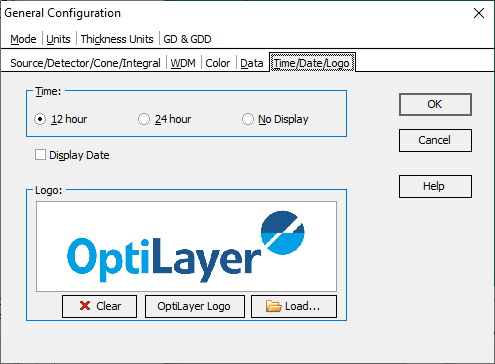

Date/Time/Logo Options
Setting Time/Date/Logo Options
Navigation: OptiLayer Menu Commands > Configuration Menu >
Setting Time/Date/Logo Options
` <idh_user_name.html>`__ ` <idh_menu_configuration.html>`__ ` <idh_window_menu.html>`__
Using this Configuration Option, you may require the display of date and/or time in the OptiLayer main window.
The time display can be switched between the 12-hour and 24-hour modes or completely switched off (No Display).
Use the Display Date check box to switch the date display on or off.

Using Logo controls, it is possible to change the logo that is presented on print pages.
The Clear button removes the logo.
The OptiLayer logo button restores the default OptiLayer logo.
The Load button allows you to use your own company or personal logo instead.